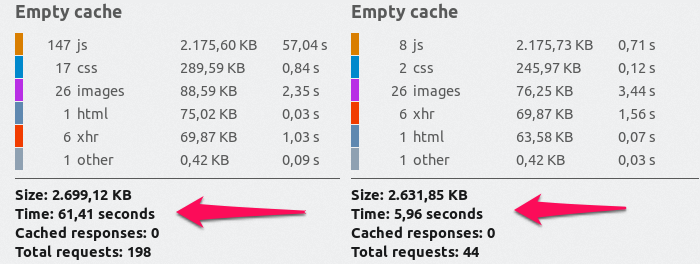
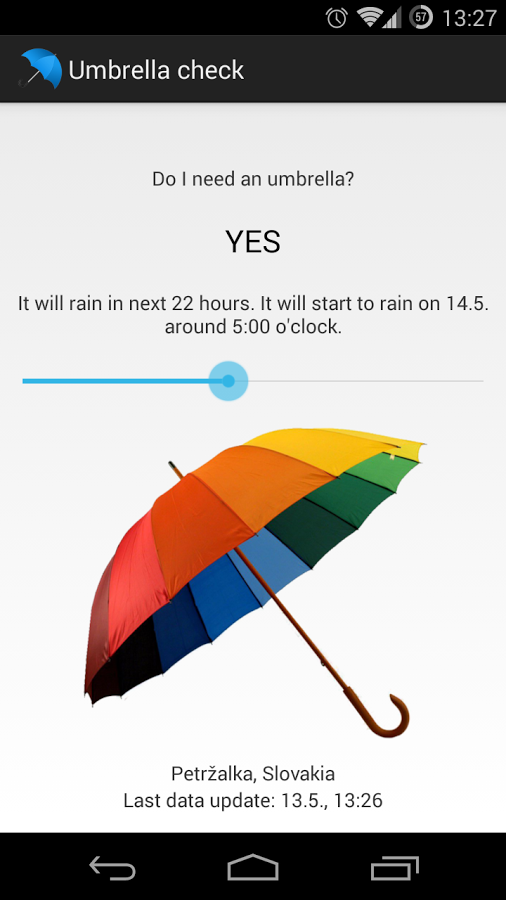
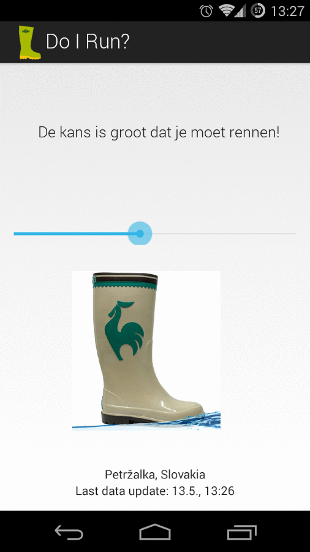
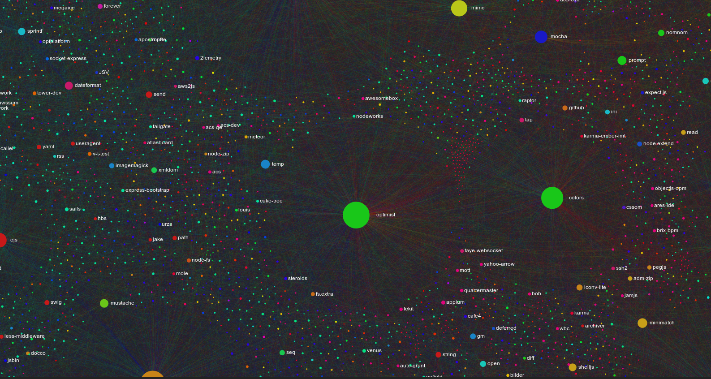

DDSC
Aanpassingen
Fritz van Deventer
Software Developer @ Nelen Schuurmans
Webinterface DDSC 2013
3Di interface
Voor de developers
JavaScript refactoren
Extra API endpoints
Solr voor 'search' functionaliteit
Rondstruinen met knopjes
Als een alarm een locatie heeft
Fullscreen + search
DMC
Geotiffs
Cosmetica
Speedups

Kijkje in de toekomst
Regenradar API

DDSC API

Data mining

Vragen?
http://ddsc.github.io/improvements-ddsc-q2/